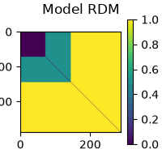
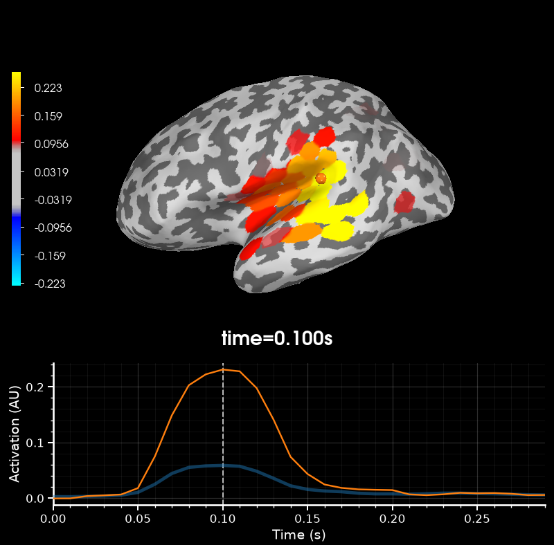
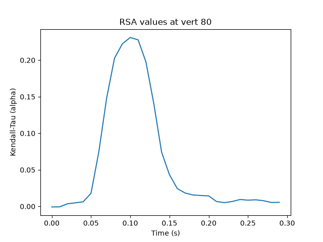

Note
Go to the end to download the full example code.
Source-level RSA using a searchlight on surface data#
This example demonstrates how to perform representational similarity analysis (RSA) on source localized MEG data, using a searchlight approach.
In the searchlight approach, representational similarity is computed between the model and searchlight “patches”. A patch is defined by a seed vertex on the cortex and all vertices within a given radius. By default, patches are created using each vertex as a seed point, so you can think of it as a “searchlight” that scans along the cortex.
The radius of a searchlight can be defined in space, in time, or both. In this example, our searchlight will have a spatial radius of 2 cm. and a temporal radius of 20 ms.
The dataset will be the MNE-sample dataset: a collection of 288 epochs in which the participant was presented with an auditory beep or visual stimulus to either the left or right ear or visual field.
# sphinx_gallery_thumbnail_number=2
import mne
import mne_rsa
# Import required packages
from matplotlib import pyplot as plt
mne.set_log_level(False) # Be less verbose
mne.viz.set_3d_backend("pyvista")
'pyvistaqt'
We’ll be using the data from the MNE-sample set. To speed up computations in this example, we’re going to use one of the sparse source spaces from the testing set.
sample_root = mne.datasets.sample.data_path(verbose=True)
testing_root = mne.datasets.testing.data_path(verbose=True)
sample_path = sample_root / "MEG" / "sample"
testing_path = testing_root / "MEG" / "sample"
subjects_dir = sample_root / "subjects"
Creating epochs from the continuous (raw) data. We downsample to 100 Hz to speed up the RSA computations later on.
raw = mne.io.read_raw_fif(sample_path / "sample_audvis_filt-0-40_raw.fif")
events = mne.read_events(sample_path / "sample_audvis_filt-0-40_raw-eve.fif")
event_id = {"audio/left": 1, "audio/right": 2, "visual/left": 3, "visual/right": 4}
epochs = mne.Epochs(raw, events, event_id, preload=True)
epochs.resample(100)
It’s important that the model RDM and the epochs are in the same order, so that each row in the model RDM will correspond to an epoch. The model RDM will be easier to interpret visually if the data is ordered such that all epochs belonging to the same experimental condition are right next to each-other, so patterns jump out. This can be achieved by first splitting the epochs by experimental condition and then concatenating them together again.
epoch_splits = [
epochs[cl] for cl in ["audio/left", "audio/right", "visual/left", "visual/right"]
]
epochs = mne.concatenate_epochs(epoch_splits)
Now that the epochs are in the proper order, we can create a RDM based on the experimental conditions. This type of RDM is referred to as a “sensitivity RDM”. Let’s create a sensitivity RDM that will pick up the left auditory response when RSA-ed against the MEG data. Since we want to capture areas where left beeps generate a large signal, we specify that left beeps should be similar to other left beeps. Since we do not want areas where visual stimuli generate a large signal, we specify that beeps must be different from visual stimuli. Furthermore, since in areas where visual stimuli generate only a small signal, random noise will dominate, we also specify that visual stimuli are different from other visual stimuli. Finally left and right auditory beeps will be somewhat similar.
def sensitivity_metric(event_id_1, event_id_2):
"""Determine similarity between two epochs, given their event ids."""
if event_id_1 == 1 and event_id_2 == 1:
return 0 # Completely similar
if event_id_1 == 2 and event_id_2 == 2:
return 0.5 # Somewhat similar
elif event_id_1 == 1 and event_id_2 == 2:
return 0.5 # Somewhat similar
elif event_id_1 == 2 and event_id_1 == 1:
return 0.5 # Somewhat similar
else:
return 1 # Not similar at all
model_rdm = mne_rsa.compute_rdm(epochs.events[:, 2], metric=sensitivity_metric)
mne_rsa.plot_rdms(model_rdm, title="Model RDM")

<Figure size 200x200 with 2 Axes>
This example is going to be on source-level, so let’s load the inverse operator and apply it to obtain a cortical surface source estimate for each epoch. To speed up the computation, we going to load an inverse operator from the testing dataset that was created using a sparse source space with not too many vertices.
inv = mne.minimum_norm.read_inverse_operator(
testing_path / "sample_audvis_trunc-meg-eeg-oct-4-meg-inv.fif"
)
Especially when creating source estimates for single epochs, it is important to think
what source orientations to use. Setting pick_ori="vector" is a solid choice,
which means using all three XYZ components of the estimated source activity, and so is
pick_ori="normal" which means using the source ortientation orthogonal to the
cortex. See the
https://mne.tools/stable/auto_tutorials/inverse/35_dipole_orientations.html for more details.
epochs_stc = mne.minimum_norm.apply_inverse_epochs(
epochs, inv, lambda2=0.1111, pick_ori="vector"
)
Performing the RSA. This will take some time. Consider increasing n_jobs to
parallelize the computation across multiple CPUs.
rsa_vals = mne_rsa.rsa_stcs(
epochs_stc, # The source localized epochs
model_rdm, # The model RDM we constructed above
src=inv["src"], # The inverse operator has our source space
stc_rdm_metric="correlation", # Metric to compute the MEG RDMs
rsa_metric="kendall-tau-a", # Metric to compare model and EEG RDMs
spatial_radius=0.02, # Spatial radius of the searchlight patch
temporal_radius=0.02, # Temporal radius of the searchlight path
tmin=0,
tmax=0.3, # To save time, only analyze this time interval
n_jobs=1, # Only use one CPU core. Increase this for more speed.
verbose=True,
) # Set to True to display a progress bar
# Find the searchlight patch with highest RSA score
peak_vertex, peak_time = rsa_vals.get_peak(vert_as_index=True)
# Plot the result at the timepoint where the maximum RSA value occurs.
rsa_vals.plot("sample", subjects_dir=subjects_dir, initial_time=peak_time)

Calculating source space distances (limit=20.0 mm)...
Not adding patch information, dist_limit too small
Performing RSA between SourceEstimates and 1 model RDM(s)
Spatial radius: 0.02 meters
Using 498 vertices
Temporal radius: 2 samples
Time interval: 0-0.3 seconds
Number of searchlight patches: 14940
0%| | 0/14940 [00:00<?, ?patch/s]Creating spatio-temporal searchlight patches
0%| | 16/14940 [00:00<01:36, 154.35patch/s]
0%| | 32/14940 [00:00<01:36, 155.18patch/s]
0%| | 48/14940 [00:00<01:35, 155.90patch/s]
0%| | 64/14940 [00:00<01:35, 156.29patch/s]
1%| | 80/14940 [00:00<01:34, 157.10patch/s]
1%| | 96/14940 [00:00<01:34, 156.61patch/s]
1%| | 112/14940 [00:00<01:35, 155.68patch/s]
1%| | 128/14940 [00:00<01:35, 154.99patch/s]
1%| | 144/14940 [00:00<01:35, 154.32patch/s]
1%| | 160/14940 [00:01<01:35, 154.28patch/s]
1%| | 176/14940 [00:01<01:36, 152.72patch/s]
1%|▏ | 192/14940 [00:01<01:35, 153.76patch/s]
1%|▏ | 208/14940 [00:01<01:35, 154.70patch/s]
1%|▏ | 224/14940 [00:01<01:34, 155.33patch/s]
2%|▏ | 240/14940 [00:01<01:34, 154.86patch/s]
2%|▏ | 256/14940 [00:01<01:34, 155.10patch/s]
2%|▏ | 272/14940 [00:01<01:34, 155.18patch/s]
2%|▏ | 288/14940 [00:01<01:34, 154.67patch/s]
2%|▏ | 304/14940 [00:01<01:34, 154.24patch/s]
2%|▏ | 320/14940 [00:02<01:34, 154.41patch/s]
2%|▏ | 336/14940 [00:02<01:34, 154.88patch/s]
2%|▏ | 352/14940 [00:02<01:33, 155.51patch/s]
2%|▏ | 368/14940 [00:02<01:33, 155.09patch/s]
3%|▎ | 384/14940 [00:02<01:34, 154.46patch/s]
3%|▎ | 400/14940 [00:02<01:34, 154.05patch/s]
3%|▎ | 416/14940 [00:02<01:34, 154.20patch/s]
3%|▎ | 432/14940 [00:02<01:33, 154.94patch/s]
3%|▎ | 448/14940 [00:02<01:33, 155.60patch/s]
3%|▎ | 464/14940 [00:02<01:32, 155.74patch/s]
3%|▎ | 480/14940 [00:03<01:32, 156.18patch/s]
3%|▎ | 496/14940 [00:03<01:32, 156.95patch/s]
3%|▎ | 512/14940 [00:03<01:31, 156.93patch/s]
4%|▎ | 528/14940 [00:03<01:32, 155.89patch/s]
4%|▎ | 544/14940 [00:03<01:32, 155.15patch/s]
4%|▎ | 560/14940 [00:03<01:33, 154.48patch/s]
4%|▍ | 576/14940 [00:03<01:33, 154.41patch/s]
4%|▍ | 592/14940 [00:03<01:32, 154.47patch/s]
4%|▍ | 608/14940 [00:03<01:32, 154.13patch/s]
4%|▍ | 624/14940 [00:04<01:32, 154.03patch/s]
4%|▍ | 640/14940 [00:04<01:32, 153.94patch/s]
4%|▍ | 656/14940 [00:04<01:32, 154.03patch/s]
4%|▍ | 672/14940 [00:04<01:32, 153.89patch/s]
5%|▍ | 688/14940 [00:04<01:32, 153.75patch/s]
5%|▍ | 704/14940 [00:04<01:32, 153.34patch/s]
5%|▍ | 720/14940 [00:04<01:32, 153.41patch/s]
5%|▍ | 736/14940 [00:04<01:32, 154.17patch/s]
5%|▌ | 752/14940 [00:04<01:31, 154.44patch/s]
5%|▌ | 768/14940 [00:04<01:32, 153.63patch/s]
5%|▌ | 784/14940 [00:05<01:32, 153.43patch/s]
5%|▌ | 800/14940 [00:05<01:32, 153.00patch/s]
5%|▌ | 816/14940 [00:05<01:32, 152.60patch/s]
6%|▌ | 832/14940 [00:05<01:32, 152.77patch/s]
6%|▌ | 848/14940 [00:05<01:32, 152.73patch/s]
6%|▌ | 864/14940 [00:05<01:31, 153.12patch/s]
6%|▌ | 880/14940 [00:05<01:32, 152.58patch/s]
6%|▌ | 896/14940 [00:05<01:32, 151.93patch/s]
6%|▌ | 912/14940 [00:05<01:32, 151.38patch/s]
6%|▌ | 928/14940 [00:06<01:32, 151.52patch/s]
6%|▋ | 944/14940 [00:06<01:31, 152.82patch/s]
6%|▋ | 960/14940 [00:06<01:30, 153.95patch/s]
7%|▋ | 976/14940 [00:06<01:32, 151.57patch/s]
7%|▋ | 992/14940 [00:06<01:32, 151.26patch/s]
7%|▋ | 1008/14940 [00:06<01:31, 152.84patch/s]
7%|▋ | 1024/14940 [00:06<01:31, 152.60patch/s]
7%|▋ | 1040/14940 [00:06<01:31, 151.58patch/s]
7%|▋ | 1056/14940 [00:06<01:31, 151.43patch/s]
7%|▋ | 1072/14940 [00:06<01:31, 151.89patch/s]
7%|▋ | 1088/14940 [00:07<01:31, 151.93patch/s]
7%|▋ | 1104/14940 [00:07<01:31, 151.37patch/s]
7%|▋ | 1120/14940 [00:07<01:31, 151.14patch/s]
8%|▊ | 1136/14940 [00:07<01:31, 151.43patch/s]
8%|▊ | 1152/14940 [00:07<01:30, 152.33patch/s]
8%|▊ | 1168/14940 [00:07<01:29, 153.06patch/s]
8%|▊ | 1184/14940 [00:07<01:29, 153.20patch/s]
8%|▊ | 1200/14940 [00:07<01:29, 153.65patch/s]
8%|▊ | 1216/14940 [00:07<01:29, 153.44patch/s]
8%|▊ | 1232/14940 [00:08<01:29, 153.97patch/s]
8%|▊ | 1248/14940 [00:08<01:29, 152.83patch/s]
8%|▊ | 1264/14940 [00:08<01:29, 152.29patch/s]
9%|▊ | 1280/14940 [00:08<01:29, 152.44patch/s]
9%|▊ | 1296/14940 [00:08<01:29, 151.71patch/s]
9%|▉ | 1312/14940 [00:08<01:30, 151.24patch/s]
9%|▉ | 1328/14940 [00:08<01:29, 151.39patch/s]
9%|▉ | 1344/14940 [00:08<01:30, 150.56patch/s]
9%|▉ | 1360/14940 [00:08<01:30, 150.13patch/s]
9%|▉ | 1376/14940 [00:08<01:31, 148.79patch/s]
9%|▉ | 1391/14940 [00:09<01:32, 147.22patch/s]
9%|▉ | 1406/14940 [00:09<01:31, 147.63patch/s]
10%|▉ | 1421/14940 [00:09<01:31, 148.05patch/s]
10%|▉ | 1436/14940 [00:09<01:31, 147.92patch/s]
10%|▉ | 1451/14940 [00:09<01:31, 146.72patch/s]
10%|▉ | 1466/14940 [00:09<01:31, 146.46patch/s]
10%|▉ | 1482/14940 [00:09<01:31, 147.84patch/s]
10%|█ | 1498/14940 [00:09<01:30, 149.15patch/s]
10%|█ | 1513/14940 [00:09<01:30, 149.17patch/s]
10%|█ | 1528/14940 [00:09<01:29, 149.30patch/s]
10%|█ | 1544/14940 [00:10<01:29, 150.31patch/s]
10%|█ | 1560/14940 [00:10<01:28, 151.94patch/s]
11%|█ | 1576/14940 [00:10<01:28, 150.37patch/s]
11%|█ | 1592/14940 [00:10<01:28, 150.05patch/s]
11%|█ | 1608/14940 [00:10<01:28, 151.00patch/s]
11%|█ | 1624/14940 [00:10<01:28, 151.30patch/s]
11%|█ | 1640/14940 [00:10<01:28, 150.76patch/s]
11%|█ | 1656/14940 [00:10<01:28, 150.29patch/s]
11%|█ | 1672/14940 [00:10<01:28, 150.42patch/s]
11%|█▏ | 1688/14940 [00:11<01:28, 149.86patch/s]
11%|█▏ | 1703/14940 [00:11<01:28, 148.77patch/s]
12%|█▏ | 1719/14940 [00:11<01:28, 149.37patch/s]
12%|█▏ | 1735/14940 [00:11<01:27, 150.58patch/s]
12%|█▏ | 1751/14940 [00:11<01:27, 151.58patch/s]
12%|█▏ | 1767/14940 [00:11<01:26, 152.81patch/s]
12%|█▏ | 1783/14940 [00:11<01:26, 151.28patch/s]
12%|█▏ | 1799/14940 [00:11<01:27, 150.22patch/s]
12%|█▏ | 1815/14940 [00:11<01:28, 148.59patch/s]
12%|█▏ | 1830/14940 [00:12<01:28, 148.30patch/s]
12%|█▏ | 1846/14940 [00:12<01:27, 149.58patch/s]
12%|█▏ | 1862/14940 [00:12<01:26, 150.78patch/s]
13%|█▎ | 1878/14940 [00:12<01:25, 152.29patch/s]
13%|█▎ | 1894/14940 [00:12<01:25, 152.03patch/s]
13%|█▎ | 1910/14940 [00:12<01:25, 152.19patch/s]
13%|█▎ | 1926/14940 [00:12<01:25, 152.47patch/s]
13%|█▎ | 1942/14940 [00:12<01:25, 152.56patch/s]
13%|█▎ | 1958/14940 [00:12<01:24, 153.13patch/s]
13%|█▎ | 1974/14940 [00:12<01:24, 153.87patch/s]
13%|█▎ | 1990/14940 [00:13<01:24, 153.39patch/s]
13%|█▎ | 2006/14940 [00:13<01:25, 151.72patch/s]
14%|█▎ | 2022/14940 [00:13<01:25, 151.63patch/s]
14%|█▎ | 2038/14940 [00:13<01:25, 151.62patch/s]
14%|█▎ | 2054/14940 [00:13<01:24, 152.14patch/s]
14%|█▍ | 2070/14940 [00:13<01:24, 152.44patch/s]
14%|█▍ | 2086/14940 [00:13<01:24, 152.45patch/s]
14%|█▍ | 2102/14940 [00:13<01:24, 152.82patch/s]
14%|█▍ | 2118/14940 [00:13<01:23, 153.40patch/s]
14%|█▍ | 2134/14940 [00:13<01:23, 153.30patch/s]
14%|█▍ | 2150/14940 [00:14<01:23, 152.39patch/s]
14%|█▍ | 2166/14940 [00:14<01:24, 151.23patch/s]
15%|█▍ | 2182/14940 [00:14<01:25, 149.78patch/s]
15%|█▍ | 2198/14940 [00:14<01:24, 150.23patch/s]
15%|█▍ | 2214/14940 [00:14<01:24, 150.87patch/s]
15%|█▍ | 2230/14940 [00:14<01:30, 140.92patch/s]
15%|█▌ | 2245/14940 [00:14<01:29, 142.09patch/s]
15%|█▌ | 2261/14940 [00:14<01:27, 144.93patch/s]
15%|█▌ | 2277/14940 [00:14<01:25, 147.60patch/s]
15%|█▌ | 2292/14940 [00:15<01:25, 147.36patch/s]
15%|█▌ | 2307/14940 [00:15<01:25, 147.36patch/s]
16%|█▌ | 2323/14940 [00:15<01:25, 148.28patch/s]
16%|█▌ | 2339/14940 [00:15<01:24, 149.43patch/s]
16%|█▌ | 2355/14940 [00:15<01:24, 149.72patch/s]
16%|█▌ | 2370/14940 [00:15<01:24, 149.31patch/s]
16%|█▌ | 2385/14940 [00:15<01:24, 148.79patch/s]
16%|█▌ | 2400/14940 [00:15<01:24, 148.61patch/s]
16%|█▌ | 2415/14940 [00:15<01:24, 147.86patch/s]
16%|█▋ | 2430/14940 [00:15<01:24, 147.71patch/s]
16%|█▋ | 2446/14940 [00:16<01:23, 149.89patch/s]
16%|█▋ | 2462/14940 [00:16<01:22, 151.24patch/s]
17%|█▋ | 2478/14940 [00:16<01:22, 151.68patch/s]
17%|█▋ | 2494/14940 [00:16<01:22, 150.62patch/s]
17%|█▋ | 2510/14940 [00:16<01:23, 148.96patch/s]
17%|█▋ | 2525/14940 [00:16<01:23, 148.67patch/s]
17%|█▋ | 2541/14940 [00:16<01:22, 150.29patch/s]
17%|█▋ | 2557/14940 [00:16<01:21, 151.33patch/s]
17%|█▋ | 2573/14940 [00:16<01:21, 152.06patch/s]
17%|█▋ | 2589/14940 [00:17<01:21, 151.53patch/s]
17%|█▋ | 2605/14940 [00:17<01:21, 151.06patch/s]
18%|█▊ | 2621/14940 [00:17<01:21, 151.11patch/s]
18%|█▊ | 2637/14940 [00:17<01:21, 151.77patch/s]
18%|█▊ | 2653/14940 [00:17<01:20, 152.38patch/s]
18%|█▊ | 2669/14940 [00:17<01:20, 152.77patch/s]
18%|█▊ | 2685/14940 [00:17<01:20, 152.50patch/s]
18%|█▊ | 2701/14940 [00:17<01:20, 152.43patch/s]
18%|█▊ | 2717/14940 [00:17<01:20, 152.31patch/s]
18%|█▊ | 2733/14940 [00:18<01:21, 150.02patch/s]
18%|█▊ | 2749/14940 [00:18<01:24, 144.83patch/s]
19%|█▊ | 2764/14940 [00:18<01:23, 145.56patch/s]
19%|█▊ | 2779/14940 [00:18<01:23, 146.45patch/s]
19%|█▊ | 2794/14940 [00:18<01:22, 146.92patch/s]
19%|█▉ | 2809/14940 [00:18<01:22, 147.76patch/s]
19%|█▉ | 2824/14940 [00:18<01:21, 148.20patch/s]
19%|█▉ | 2839/14940 [00:18<01:21, 148.13patch/s]
19%|█▉ | 2854/14940 [00:18<01:21, 148.17patch/s]
19%|█▉ | 2869/14940 [00:18<01:21, 148.31patch/s]
19%|█▉ | 2884/14940 [00:19<01:21, 148.77patch/s]
19%|█▉ | 2900/14940 [00:19<01:20, 149.24patch/s]
20%|█▉ | 2915/14940 [00:19<01:21, 147.99patch/s]
20%|█▉ | 2931/14940 [00:19<01:20, 149.09patch/s]
20%|█▉ | 2946/14940 [00:19<01:20, 149.03patch/s]
20%|█▉ | 2961/14940 [00:19<01:20, 148.97patch/s]
20%|█▉ | 2976/14940 [00:19<01:20, 149.24patch/s]
20%|██ | 2992/14940 [00:19<01:19, 150.56patch/s]
20%|██ | 3008/14940 [00:19<01:19, 150.69patch/s]
20%|██ | 3024/14940 [00:19<01:19, 150.65patch/s]
20%|██ | 3040/14940 [00:20<01:19, 150.38patch/s]
20%|██ | 3056/14940 [00:20<01:18, 150.95patch/s]
21%|██ | 3072/14940 [00:20<01:18, 151.12patch/s]
21%|██ | 3088/14940 [00:20<01:18, 151.79patch/s]
21%|██ | 3104/14940 [00:20<01:17, 152.40patch/s]
21%|██ | 3120/14940 [00:20<01:17, 153.25patch/s]
21%|██ | 3136/14940 [00:20<01:18, 151.06patch/s]
21%|██ | 3152/14940 [00:20<01:18, 150.01patch/s]
21%|██ | 3168/14940 [00:20<01:18, 150.66patch/s]
21%|██▏ | 3184/14940 [00:21<01:18, 150.25patch/s]
21%|██▏ | 3200/14940 [00:21<01:18, 149.02patch/s]
22%|██▏ | 3215/14940 [00:21<01:19, 148.17patch/s]
22%|██▏ | 3230/14940 [00:21<01:18, 148.53patch/s]
22%|██▏ | 3245/14940 [00:21<01:18, 148.60patch/s]
22%|██▏ | 3261/14940 [00:21<01:17, 149.90patch/s]
22%|██▏ | 3277/14940 [00:21<01:17, 150.78patch/s]
22%|██▏ | 3293/14940 [00:21<01:16, 151.80patch/s]
22%|██▏ | 3309/14940 [00:21<01:16, 151.32patch/s]
22%|██▏ | 3325/14940 [00:21<01:17, 150.60patch/s]
22%|██▏ | 3341/14940 [00:22<01:17, 150.58patch/s]
22%|██▏ | 3357/14940 [00:22<01:16, 151.40patch/s]
23%|██▎ | 3373/14940 [00:22<01:16, 151.81patch/s]
23%|██▎ | 3389/14940 [00:22<01:15, 152.09patch/s]
23%|██▎ | 3405/14940 [00:22<01:15, 152.18patch/s]
23%|██▎ | 3421/14940 [00:22<01:15, 152.37patch/s]
23%|██▎ | 3437/14940 [00:22<01:15, 152.04patch/s]
23%|██▎ | 3453/14940 [00:22<01:15, 152.04patch/s]
23%|██▎ | 3469/14940 [00:22<01:15, 151.70patch/s]
23%|██▎ | 3485/14940 [00:23<01:15, 150.94patch/s]
23%|██▎ | 3501/14940 [00:23<01:15, 151.63patch/s]
24%|██▎ | 3517/14940 [00:23<01:15, 152.13patch/s]
24%|██▎ | 3533/14940 [00:23<01:14, 152.34patch/s]
24%|██▍ | 3549/14940 [00:23<01:15, 151.73patch/s]
24%|██▍ | 3565/14940 [00:23<01:15, 151.52patch/s]
24%|██▍ | 3581/14940 [00:23<01:14, 151.61patch/s]
24%|██▍ | 3597/14940 [00:23<01:14, 152.07patch/s]
24%|██▍ | 3613/14940 [00:23<01:14, 152.21patch/s]
24%|██▍ | 3629/14940 [00:23<01:14, 152.52patch/s]
24%|██▍ | 3645/14940 [00:24<01:14, 150.60patch/s]
25%|██▍ | 3661/14940 [00:24<01:15, 149.58patch/s]
25%|██▍ | 3677/14940 [00:24<01:14, 150.42patch/s]
25%|██▍ | 3693/14940 [00:24<01:14, 150.58patch/s]
25%|██▍ | 3709/14940 [00:24<01:15, 149.45patch/s]
25%|██▍ | 3724/14940 [00:24<01:15, 148.47patch/s]
25%|██▌ | 3739/14940 [00:24<01:15, 148.38patch/s]
25%|██▌ | 3754/14940 [00:24<01:15, 148.39patch/s]
25%|██▌ | 3770/14940 [00:24<01:14, 149.57patch/s]
25%|██▌ | 3786/14940 [00:25<01:14, 150.20patch/s]
25%|██▌ | 3802/14940 [00:25<01:13, 150.58patch/s]
26%|██▌ | 3818/14940 [00:25<01:14, 150.29patch/s]
26%|██▌ | 3834/14940 [00:25<01:13, 150.44patch/s]
26%|██▌ | 3850/14940 [00:25<01:13, 150.36patch/s]
26%|██▌ | 3866/14940 [00:25<01:13, 150.51patch/s]
26%|██▌ | 3882/14940 [00:25<01:13, 150.08patch/s]
26%|██▌ | 3898/14940 [00:25<01:13, 150.01patch/s]
26%|██▌ | 3914/14940 [00:25<01:14, 148.65patch/s]
26%|██▋ | 3929/14940 [00:25<01:14, 148.21patch/s]
26%|██▋ | 3944/14940 [00:26<01:14, 147.90patch/s]
26%|██▋ | 3959/14940 [00:26<01:14, 148.11patch/s]
27%|██▋ | 3974/14940 [00:26<01:13, 148.39patch/s]
27%|██▋ | 3990/14940 [00:26<01:13, 148.99patch/s]
27%|██▋ | 4006/14940 [00:26<01:13, 149.75patch/s]
27%|██▋ | 4022/14940 [00:26<01:12, 150.55patch/s]
27%|██▋ | 4038/14940 [00:26<01:12, 151.35patch/s]
27%|██▋ | 4054/14940 [00:26<01:11, 151.79patch/s]
27%|██▋ | 4070/14940 [00:26<01:11, 152.30patch/s]
27%|██▋ | 4086/14940 [00:27<01:11, 152.46patch/s]
27%|██▋ | 4102/14940 [00:27<01:10, 152.88patch/s]
28%|██▊ | 4118/14940 [00:27<01:10, 153.12patch/s]
28%|██▊ | 4134/14940 [00:27<01:10, 153.32patch/s]
28%|██▊ | 4150/14940 [00:27<01:10, 152.63patch/s]
28%|██▊ | 4166/14940 [00:27<01:10, 152.23patch/s]
28%|██▊ | 4182/14940 [00:27<01:10, 151.58patch/s]
28%|██▊ | 4198/14940 [00:27<01:10, 151.88patch/s]
28%|██▊ | 4214/14940 [00:27<01:10, 152.23patch/s]
28%|██▊ | 4230/14940 [00:27<01:10, 152.64patch/s]
28%|██▊ | 4246/14940 [00:28<01:10, 152.51patch/s]
29%|██▊ | 4262/14940 [00:28<01:10, 152.13patch/s]
29%|██▊ | 4278/14940 [00:28<01:10, 150.75patch/s]
29%|██▊ | 4294/14940 [00:28<01:10, 150.31patch/s]
29%|██▉ | 4310/14940 [00:28<01:10, 151.29patch/s]
29%|██▉ | 4326/14940 [00:28<01:10, 150.97patch/s]
29%|██▉ | 4342/14940 [00:28<01:10, 149.80patch/s]
29%|██▉ | 4357/14940 [00:28<01:11, 148.29patch/s]
29%|██▉ | 4372/14940 [00:28<01:11, 147.97patch/s]
29%|██▉ | 4388/14940 [00:29<01:10, 148.86patch/s]
29%|██▉ | 4404/14940 [00:29<01:09, 150.52patch/s]
30%|██▉ | 4420/14940 [00:29<01:09, 151.28patch/s]
30%|██▉ | 4436/14940 [00:29<01:09, 151.91patch/s]
30%|██▉ | 4452/14940 [00:29<01:09, 150.53patch/s]
30%|██▉ | 4468/14940 [00:29<01:09, 151.24patch/s]
30%|███ | 4484/14940 [00:29<01:09, 151.15patch/s]
30%|███ | 4500/14940 [00:29<01:08, 151.83patch/s]
30%|███ | 4516/14940 [00:29<01:08, 152.43patch/s]
30%|███ | 4532/14940 [00:29<01:08, 152.49patch/s]
30%|███ | 4548/14940 [00:30<01:08, 150.64patch/s]
31%|███ | 4564/14940 [00:30<01:09, 148.82patch/s]
31%|███ | 4580/14940 [00:30<01:09, 149.31patch/s]
31%|███ | 4596/14940 [00:30<01:08, 149.93patch/s]
31%|███ | 4611/14940 [00:30<01:08, 149.80patch/s]
31%|███ | 4627/14940 [00:30<01:08, 150.28patch/s]
31%|███ | 4643/14940 [00:30<01:08, 150.90patch/s]
31%|███ | 4659/14940 [00:30<01:07, 151.28patch/s]
31%|███▏ | 4675/14940 [00:30<01:07, 151.66patch/s]
31%|███▏ | 4691/14940 [00:31<01:07, 151.00patch/s]
32%|███▏ | 4707/14940 [00:31<01:07, 150.90patch/s]
32%|███▏ | 4723/14940 [00:31<01:08, 149.13patch/s]
32%|███▏ | 4738/14940 [00:31<01:08, 148.86patch/s]
32%|███▏ | 4754/14940 [00:31<01:08, 149.70patch/s]
32%|███▏ | 4770/14940 [00:31<01:07, 149.90patch/s]
32%|███▏ | 4786/14940 [00:31<01:07, 150.41patch/s]
32%|███▏ | 4802/14940 [00:31<01:06, 151.44patch/s]
32%|███▏ | 4818/14940 [00:31<01:06, 151.82patch/s]
32%|███▏ | 4834/14940 [00:31<01:06, 151.57patch/s]
32%|███▏ | 4850/14940 [00:32<01:07, 150.14patch/s]
33%|███▎ | 4866/14940 [00:32<01:06, 150.58patch/s]
33%|███▎ | 4882/14940 [00:32<01:06, 152.21patch/s]
33%|███▎ | 4898/14940 [00:32<01:05, 152.80patch/s]
33%|███▎ | 4914/14940 [00:32<01:05, 153.33patch/s]
33%|███▎ | 4930/14940 [00:32<01:05, 153.50patch/s]
33%|███▎ | 4946/14940 [00:32<01:05, 153.68patch/s]
33%|███▎ | 4962/14940 [00:32<01:04, 153.73patch/s]
33%|███▎ | 4978/14940 [00:32<01:04, 153.64patch/s]
33%|███▎ | 4994/14940 [00:33<01:04, 153.04patch/s]
34%|███▎ | 5010/14940 [00:33<01:04, 153.33patch/s]
34%|███▎ | 5026/14940 [00:33<01:04, 153.76patch/s]
34%|███▎ | 5042/14940 [00:33<01:04, 154.18patch/s]
34%|███▍ | 5058/14940 [00:33<01:04, 154.35patch/s]
34%|███▍ | 5074/14940 [00:33<01:03, 154.39patch/s]
34%|███▍ | 5090/14940 [00:33<01:03, 154.27patch/s]
34%|███▍ | 5106/14940 [00:33<01:03, 154.06patch/s]
34%|███▍ | 5122/14940 [00:33<01:04, 153.08patch/s]
34%|███▍ | 5138/14940 [00:33<01:04, 153.03patch/s]
34%|███▍ | 5154/14940 [00:34<01:03, 154.26patch/s]
35%|███▍ | 5170/14940 [00:34<01:03, 153.85patch/s]
35%|███▍ | 5186/14940 [00:34<01:03, 153.22patch/s]
35%|███▍ | 5202/14940 [00:34<01:03, 153.26patch/s]
35%|███▍ | 5218/14940 [00:34<01:03, 153.64patch/s]
35%|███▌ | 5234/14940 [00:34<01:03, 153.69patch/s]
35%|███▌ | 5250/14940 [00:34<01:02, 153.83patch/s]
35%|███▌ | 5266/14940 [00:34<01:02, 153.90patch/s]
35%|███▌ | 5282/14940 [00:34<01:02, 154.08patch/s]
35%|███▌ | 5298/14940 [00:34<01:02, 154.30patch/s]
36%|███▌ | 5314/14940 [00:35<01:02, 154.12patch/s]
36%|███▌ | 5330/14940 [00:35<01:02, 153.28patch/s]
36%|███▌ | 5346/14940 [00:35<01:02, 153.09patch/s]
36%|███▌ | 5362/14940 [00:35<01:02, 153.87patch/s]
36%|███▌ | 5378/14940 [00:35<01:01, 154.52patch/s]
36%|███▌ | 5394/14940 [00:35<01:01, 155.18patch/s]
36%|███▌ | 5410/14940 [00:35<01:01, 154.78patch/s]
36%|███▋ | 5426/14940 [00:35<01:01, 154.44patch/s]
36%|███▋ | 5442/14940 [00:35<01:01, 154.55patch/s]
37%|███▋ | 5458/14940 [00:36<01:01, 154.73patch/s]
37%|███▋ | 5474/14940 [00:36<01:01, 154.42patch/s]
37%|███▋ | 5490/14940 [00:36<01:01, 154.22patch/s]
37%|███▋ | 5506/14940 [00:36<01:01, 153.48patch/s]
37%|███▋ | 5522/14940 [00:36<01:01, 153.12patch/s]
37%|███▋ | 5538/14940 [00:36<01:01, 154.10patch/s]
37%|███▋ | 5554/14940 [00:36<01:00, 154.12patch/s]
37%|███▋ | 5570/14940 [00:36<01:01, 153.25patch/s]
37%|███▋ | 5586/14940 [00:36<01:00, 153.39patch/s]
37%|███▋ | 5602/14940 [00:36<01:00, 153.93patch/s]
38%|███▊ | 5618/14940 [00:37<01:00, 154.57patch/s]
38%|███▊ | 5634/14940 [00:37<00:59, 155.27patch/s]
38%|███▊ | 5650/14940 [00:37<01:00, 153.10patch/s]
38%|███▊ | 5666/14940 [00:37<01:00, 153.08patch/s]
38%|███▊ | 5682/14940 [00:37<01:00, 152.68patch/s]
38%|███▊ | 5698/14940 [00:37<01:00, 152.23patch/s]
38%|███▊ | 5714/14940 [00:37<01:00, 153.30patch/s]
38%|███▊ | 5730/14940 [00:37<00:59, 154.58patch/s]
38%|███▊ | 5746/14940 [00:37<00:59, 154.79patch/s]
39%|███▊ | 5762/14940 [00:37<00:59, 154.82patch/s]
39%|███▊ | 5778/14940 [00:38<00:58, 155.40patch/s]
39%|███▉ | 5794/14940 [00:38<00:58, 155.64patch/s]
39%|███▉ | 5810/14940 [00:38<00:58, 154.97patch/s]
39%|███▉ | 5826/14940 [00:38<00:58, 154.88patch/s]
39%|███▉ | 5842/14940 [00:38<00:58, 155.15patch/s]
39%|███▉ | 5858/14940 [00:38<00:58, 155.33patch/s]
39%|███▉ | 5874/14940 [00:38<00:58, 155.50patch/s]
39%|███▉ | 5890/14940 [00:38<00:58, 154.92patch/s]
40%|███▉ | 5906/14940 [00:38<00:58, 154.38patch/s]
40%|███▉ | 5922/14940 [00:39<00:58, 154.00patch/s]
40%|███▉ | 5938/14940 [00:39<00:58, 154.12patch/s]
40%|███▉ | 5954/14940 [00:39<00:58, 154.11patch/s]
40%|███▉ | 5970/14940 [00:39<00:58, 154.10patch/s]
40%|████ | 5986/14940 [00:39<00:58, 153.56patch/s]
40%|████ | 6002/14940 [00:39<00:58, 153.08patch/s]
40%|████ | 6018/14940 [00:39<00:58, 153.05patch/s]
40%|████ | 6034/14940 [00:39<00:58, 153.06patch/s]
40%|████ | 6050/14940 [00:39<00:57, 153.51patch/s]
41%|████ | 6066/14940 [00:39<00:57, 153.51patch/s]
41%|████ | 6082/14940 [00:40<00:57, 154.11patch/s]
41%|████ | 6098/14940 [00:40<00:57, 154.56patch/s]
41%|████ | 6114/14940 [00:40<00:56, 154.86patch/s]
41%|████ | 6130/14940 [00:40<00:56, 155.43patch/s]
41%|████ | 6146/14940 [00:40<00:56, 156.14patch/s]
41%|████ | 6162/14940 [00:40<00:56, 155.63patch/s]
41%|████▏ | 6178/14940 [00:40<00:56, 155.16patch/s]
41%|████▏ | 6194/14940 [00:40<00:56, 154.95patch/s]
42%|████▏ | 6210/14940 [00:40<00:56, 154.90patch/s]
42%|████▏ | 6226/14940 [00:41<00:56, 153.53patch/s]
42%|████▏ | 6242/14940 [00:41<00:56, 153.56patch/s]
42%|████▏ | 6258/14940 [00:41<00:56, 152.41patch/s]
42%|████▏ | 6274/14940 [00:41<00:56, 152.48patch/s]
42%|████▏ | 6290/14940 [00:41<00:56, 152.61patch/s]
42%|████▏ | 6306/14940 [00:41<00:56, 152.89patch/s]
42%|████▏ | 6322/14940 [00:41<00:56, 153.71patch/s]
42%|████▏ | 6338/14940 [00:41<00:55, 154.07patch/s]
43%|████▎ | 6354/14940 [00:41<00:55, 154.03patch/s]
43%|████▎ | 6370/14940 [00:41<00:55, 154.27patch/s]
43%|████▎ | 6386/14940 [00:42<00:55, 154.63patch/s]
43%|████▎ | 6402/14940 [00:42<00:55, 154.91patch/s]
43%|████▎ | 6418/14940 [00:42<00:54, 155.67patch/s]
43%|████▎ | 6434/14940 [00:42<00:54, 154.96patch/s]
43%|████▎ | 6450/14940 [00:42<00:54, 154.50patch/s]
43%|████▎ | 6466/14940 [00:42<00:54, 155.44patch/s]
43%|████▎ | 6482/14940 [00:42<00:54, 156.15patch/s]
43%|████▎ | 6498/14940 [00:42<00:53, 156.64patch/s]
44%|████▎ | 6514/14940 [00:42<00:53, 156.79patch/s]
44%|████▎ | 6530/14940 [00:42<00:53, 156.50patch/s]
44%|████▍ | 6546/14940 [00:43<00:53, 156.03patch/s]
44%|████▍ | 6562/14940 [00:43<00:53, 155.39patch/s]
44%|████▍ | 6578/14940 [00:43<00:54, 154.66patch/s]
44%|████▍ | 6594/14940 [00:43<00:53, 155.47patch/s]
44%|████▍ | 6610/14940 [00:43<00:53, 155.09patch/s]
44%|████▍ | 6626/14940 [00:43<00:53, 154.49patch/s]
44%|████▍ | 6642/14940 [00:43<00:53, 154.06patch/s]
45%|████▍ | 6658/14940 [00:43<00:53, 153.90patch/s]
45%|████▍ | 6674/14940 [00:43<00:53, 153.92patch/s]
45%|████▍ | 6690/14940 [00:44<00:53, 154.15patch/s]
45%|████▍ | 6706/14940 [00:44<00:53, 154.46patch/s]
45%|████▍ | 6722/14940 [00:44<00:53, 154.96patch/s]
45%|████▌ | 6738/14940 [00:44<00:52, 155.25patch/s]
45%|████▌ | 6754/14940 [00:44<00:52, 155.40patch/s]
45%|████▌ | 6770/14940 [00:44<00:52, 155.41patch/s]
45%|████▌ | 6786/14940 [00:44<00:52, 155.45patch/s]
46%|████▌ | 6802/14940 [00:44<00:52, 155.52patch/s]
46%|████▌ | 6818/14940 [00:44<00:52, 155.68patch/s]
46%|████▌ | 6834/14940 [00:44<00:51, 156.21patch/s]
46%|████▌ | 6850/14940 [00:45<00:52, 155.18patch/s]
46%|████▌ | 6866/14940 [00:45<00:52, 155.22patch/s]
46%|████▌ | 6882/14940 [00:45<00:51, 155.44patch/s]
46%|████▌ | 6898/14940 [00:45<00:51, 155.47patch/s]
46%|████▋ | 6914/14940 [00:45<00:51, 154.96patch/s]
46%|████▋ | 6930/14940 [00:45<00:51, 155.45patch/s]
46%|████▋ | 6946/14940 [00:45<00:51, 155.95patch/s]
47%|████▋ | 6962/14940 [00:45<00:51, 156.30patch/s]
47%|████▋ | 6978/14940 [00:45<00:51, 153.13patch/s]
47%|████▋ | 6994/14940 [00:45<00:51, 153.53patch/s]
47%|████▋ | 7010/14940 [00:46<00:51, 154.69patch/s]
47%|████▋ | 7026/14940 [00:46<00:51, 154.92patch/s]
47%|████▋ | 7042/14940 [00:46<00:51, 154.82patch/s]
47%|████▋ | 7058/14940 [00:46<00:50, 154.67patch/s]
47%|████▋ | 7074/14940 [00:46<00:50, 154.75patch/s]
47%|████▋ | 7090/14940 [00:46<00:50, 155.17patch/s]
48%|████▊ | 7106/14940 [00:46<00:50, 155.77patch/s]
48%|████▊ | 7122/14940 [00:46<00:50, 156.29patch/s]
48%|████▊ | 7138/14940 [00:46<00:49, 156.81patch/s]
48%|████▊ | 7154/14940 [00:46<00:49, 156.72patch/s]
48%|████▊ | 7170/14940 [00:47<00:49, 156.47patch/s]
48%|████▊ | 7186/14940 [00:47<00:49, 155.65patch/s]
48%|████▊ | 7202/14940 [00:47<00:49, 154.99patch/s]
48%|████▊ | 7218/14940 [00:47<00:49, 155.14patch/s]
48%|████▊ | 7234/14940 [00:47<00:49, 155.35patch/s]
49%|████▊ | 7250/14940 [00:47<00:49, 155.91patch/s]
49%|████▊ | 7266/14940 [00:47<00:49, 156.05patch/s]
49%|████▊ | 7282/14940 [00:47<00:49, 155.86patch/s]
49%|████▉ | 7298/14940 [00:47<00:49, 155.65patch/s]
49%|████▉ | 7314/14940 [00:48<00:54, 140.78patch/s]
49%|████▉ | 7330/14940 [00:48<00:52, 144.87patch/s]
49%|████▉ | 7346/14940 [00:48<00:51, 148.44patch/s]
49%|████▉ | 7362/14940 [00:48<00:50, 150.51patch/s]
49%|████▉ | 7378/14940 [00:48<00:49, 152.00patch/s]
49%|████▉ | 7394/14940 [00:48<00:49, 153.51patch/s]
50%|████▉ | 7410/14940 [00:48<00:48, 154.71patch/s]
50%|████▉ | 7426/14940 [00:48<00:48, 154.43patch/s]
50%|████▉ | 7442/14940 [00:48<00:48, 154.33patch/s]
50%|████▉ | 7458/14940 [00:48<00:48, 155.10patch/s]
50%|█████ | 7474/14940 [00:49<00:47, 155.59patch/s]
50%|█████ | 7490/14940 [00:49<00:47, 155.24patch/s]
50%|█████ | 7506/14940 [00:49<00:47, 155.24patch/s]
50%|█████ | 7522/14940 [00:49<00:47, 155.78patch/s]
50%|█████ | 7538/14940 [00:49<00:47, 155.95patch/s]
51%|█████ | 7554/14940 [00:49<00:47, 155.77patch/s]
51%|█████ | 7570/14940 [00:49<00:47, 155.32patch/s]
51%|█████ | 7586/14940 [00:49<00:47, 154.97patch/s]
51%|█████ | 7602/14940 [00:49<00:47, 155.01patch/s]
51%|█████ | 7618/14940 [00:50<00:47, 155.23patch/s]
51%|█████ | 7634/14940 [00:50<00:46, 155.48patch/s]
51%|█████ | 7650/14940 [00:50<00:46, 156.04patch/s]
51%|█████▏ | 7666/14940 [00:50<00:46, 156.63patch/s]
51%|█████▏ | 7682/14940 [00:50<00:46, 156.56patch/s]
52%|█████▏ | 7698/14940 [00:50<00:46, 155.87patch/s]
52%|█████▏ | 7714/14940 [00:50<00:46, 155.28patch/s]
52%|█████▏ | 7730/14940 [00:50<00:46, 155.13patch/s]
52%|█████▏ | 7746/14940 [00:50<00:46, 155.01patch/s]
52%|█████▏ | 7762/14940 [00:50<00:46, 155.39patch/s]
52%|█████▏ | 7778/14940 [00:51<00:46, 155.18patch/s]
52%|█████▏ | 7794/14940 [00:51<00:46, 154.67patch/s]
52%|█████▏ | 7810/14940 [00:51<00:46, 154.46patch/s]
52%|█████▏ | 7826/14940 [00:51<00:45, 154.88patch/s]
52%|█████▏ | 7842/14940 [00:51<00:46, 152.85patch/s]
53%|█████▎ | 7858/14940 [00:51<00:46, 152.97patch/s]
53%|█████▎ | 7874/14940 [00:51<00:46, 152.03patch/s]
53%|█████▎ | 7890/14940 [00:51<00:46, 152.82patch/s]
53%|█████▎ | 7906/14940 [00:51<00:45, 153.83patch/s]
53%|█████▎ | 7922/14940 [00:51<00:45, 154.72patch/s]
53%|█████▎ | 7938/14940 [00:52<00:45, 154.48patch/s]
53%|█████▎ | 7954/14940 [00:52<00:45, 154.24patch/s]
53%|█████▎ | 7970/14940 [00:52<00:45, 153.66patch/s]
53%|█████▎ | 7986/14940 [00:52<00:45, 153.40patch/s]
54%|█████▎ | 8002/14940 [00:52<00:45, 153.66patch/s]
54%|█████▎ | 8018/14940 [00:52<00:44, 154.19patch/s]
54%|█████▍ | 8034/14940 [00:52<00:44, 155.37patch/s]
54%|█████▍ | 8050/14940 [00:52<00:44, 155.65patch/s]
54%|█████▍ | 8066/14940 [00:52<00:44, 155.74patch/s]
54%|█████▍ | 8082/14940 [00:53<00:44, 154.40patch/s]
54%|█████▍ | 8098/14940 [00:53<00:44, 153.12patch/s]
54%|█████▍ | 8114/14940 [00:53<00:44, 153.39patch/s]
54%|█████▍ | 8130/14940 [00:53<00:44, 153.77patch/s]
55%|█████▍ | 8146/14940 [00:53<00:43, 154.78patch/s]
55%|█████▍ | 8162/14940 [00:53<00:43, 155.21patch/s]
55%|█████▍ | 8178/14940 [00:53<00:43, 154.55patch/s]
55%|█████▍ | 8194/14940 [00:53<00:43, 153.96patch/s]
55%|█████▍ | 8210/14940 [00:53<00:43, 153.64patch/s]
55%|█████▌ | 8226/14940 [00:53<00:43, 153.13patch/s]
55%|█████▌ | 8242/14940 [00:54<00:43, 152.93patch/s]
55%|█████▌ | 8258/14940 [00:54<00:43, 152.73patch/s]
55%|█████▌ | 8274/14940 [00:54<00:43, 152.90patch/s]
55%|█████▌ | 8290/14940 [00:54<00:43, 153.63patch/s]
56%|█████▌ | 8306/14940 [00:54<00:42, 154.67patch/s]
56%|█████▌ | 8322/14940 [00:54<00:42, 155.05patch/s]
56%|█████▌ | 8338/14940 [00:54<00:42, 155.58patch/s]
56%|█████▌ | 8354/14940 [00:54<00:42, 156.11patch/s]
56%|█████▌ | 8370/14940 [00:54<00:41, 156.56patch/s]
56%|█████▌ | 8386/14940 [00:54<00:41, 156.62patch/s]
56%|█████▌ | 8402/14940 [00:55<00:41, 156.67patch/s]
56%|█████▋ | 8418/14940 [00:55<00:41, 156.10patch/s]
56%|█████▋ | 8434/14940 [00:55<00:41, 155.04patch/s]
57%|█████▋ | 8450/14940 [00:55<00:42, 154.37patch/s]
57%|█████▋ | 8466/14940 [00:55<00:42, 153.93patch/s]
57%|█████▋ | 8482/14940 [00:55<00:41, 153.81patch/s]
57%|█████▋ | 8498/14940 [00:55<00:41, 154.40patch/s]
57%|█████▋ | 8514/14940 [00:55<00:41, 153.06patch/s]
57%|█████▋ | 8530/14940 [00:55<00:41, 153.27patch/s]
57%|█████▋ | 8546/14940 [00:56<00:41, 153.38patch/s]
57%|█████▋ | 8562/14940 [00:56<00:41, 153.27patch/s]
57%|█████▋ | 8578/14940 [00:56<00:41, 153.58patch/s]
58%|█████▊ | 8594/14940 [00:56<00:41, 152.92patch/s]
58%|█████▊ | 8610/14940 [00:56<00:41, 152.38patch/s]
58%|█████▊ | 8626/14940 [00:56<00:41, 152.93patch/s]
58%|█████▊ | 8642/14940 [00:56<00:41, 153.32patch/s]
58%|█████▊ | 8658/14940 [00:56<00:40, 153.72patch/s]
58%|█████▊ | 8674/14940 [00:56<00:40, 154.08patch/s]
58%|█████▊ | 8690/14940 [00:56<00:40, 155.03patch/s]
58%|█████▊ | 8706/14940 [00:57<00:40, 155.08patch/s]
58%|█████▊ | 8722/14940 [00:57<00:40, 154.46patch/s]
58%|█████▊ | 8738/14940 [00:57<00:40, 154.10patch/s]
59%|█████▊ | 8754/14940 [00:57<00:40, 153.72patch/s]
59%|█████▊ | 8770/14940 [00:57<00:40, 153.45patch/s]
59%|█████▉ | 8786/14940 [00:57<00:40, 151.07patch/s]
59%|█████▉ | 8802/14940 [00:57<00:40, 151.91patch/s]
59%|█████▉ | 8818/14940 [00:57<00:40, 152.64patch/s]
59%|█████▉ | 8834/14940 [00:57<00:39, 153.80patch/s]
59%|█████▉ | 8850/14940 [00:57<00:39, 154.80patch/s]
59%|█████▉ | 8866/14940 [00:58<00:39, 155.41patch/s]
59%|█████▉ | 8882/14940 [00:58<00:38, 155.47patch/s]
60%|█████▉ | 8898/14940 [00:58<00:39, 154.20patch/s]
60%|█████▉ | 8914/14940 [00:58<00:39, 153.40patch/s]
60%|█████▉ | 8930/14940 [00:58<00:39, 153.04patch/s]
60%|█████▉ | 8946/14940 [00:58<00:39, 153.39patch/s]
60%|█████▉ | 8962/14940 [00:58<00:38, 154.55patch/s]
60%|██████ | 8978/14940 [00:58<00:38, 154.74patch/s]
60%|██████ | 8994/14940 [00:58<00:38, 154.86patch/s]
60%|██████ | 9010/14940 [00:59<00:38, 154.98patch/s]
60%|██████ | 9026/14940 [00:59<00:38, 154.26patch/s]
61%|██████ | 9042/14940 [00:59<00:38, 155.01patch/s]
61%|██████ | 9058/14940 [00:59<00:37, 155.38patch/s]
61%|██████ | 9074/14940 [00:59<00:37, 154.98patch/s]
61%|██████ | 9090/14940 [00:59<00:37, 154.62patch/s]
61%|██████ | 9106/14940 [00:59<00:37, 154.34patch/s]
61%|██████ | 9122/14940 [00:59<00:37, 154.28patch/s]
61%|██████ | 9138/14940 [00:59<00:37, 154.84patch/s]
61%|██████▏ | 9154/14940 [00:59<00:37, 154.62patch/s]
61%|██████▏ | 9170/14940 [01:00<00:37, 153.07patch/s]
61%|██████▏ | 9186/14940 [01:00<00:37, 152.37patch/s]
62%|██████▏ | 9202/14940 [01:00<00:37, 152.81patch/s]
62%|██████▏ | 9218/14940 [01:00<00:37, 153.26patch/s]
62%|██████▏ | 9234/14940 [01:00<00:37, 153.91patch/s]
62%|██████▏ | 9250/14940 [01:00<00:36, 153.83patch/s]
62%|██████▏ | 9266/14940 [01:00<00:36, 154.05patch/s]
62%|██████▏ | 9282/14940 [01:00<00:36, 153.99patch/s]
62%|██████▏ | 9298/14940 [01:00<00:36, 153.98patch/s]
62%|██████▏ | 9314/14940 [01:01<00:36, 153.00patch/s]
62%|██████▏ | 9330/14940 [01:01<00:37, 150.94patch/s]
63%|██████▎ | 9346/14940 [01:01<00:36, 152.47patch/s]
63%|██████▎ | 9362/14940 [01:01<00:36, 153.36patch/s]
63%|██████▎ | 9378/14940 [01:01<00:36, 152.94patch/s]
63%|██████▎ | 9394/14940 [01:01<00:36, 153.17patch/s]
63%|██████▎ | 9410/14940 [01:01<00:36, 153.24patch/s]
63%|██████▎ | 9426/14940 [01:01<00:36, 151.94patch/s]
63%|██████▎ | 9442/14940 [01:01<00:35, 153.29patch/s]
63%|██████▎ | 9458/14940 [01:01<00:35, 153.63patch/s]
63%|██████▎ | 9474/14940 [01:02<00:35, 153.67patch/s]
64%|██████▎ | 9490/14940 [01:02<00:35, 152.09patch/s]
64%|██████▎ | 9506/14940 [01:02<00:35, 151.17patch/s]
64%|██████▎ | 9522/14940 [01:02<00:35, 151.69patch/s]
64%|██████▍ | 9538/14940 [01:02<00:35, 152.68patch/s]
64%|██████▍ | 9554/14940 [01:02<00:35, 152.10patch/s]
64%|██████▍ | 9570/14940 [01:02<00:35, 151.83patch/s]
64%|██████▍ | 9586/14940 [01:02<00:35, 152.34patch/s]
64%|██████▍ | 9602/14940 [01:02<00:34, 152.66patch/s]
64%|██████▍ | 9618/14940 [01:03<00:34, 152.96patch/s]
64%|██████▍ | 9634/14940 [01:03<00:34, 152.81patch/s]
65%|██████▍ | 9650/14940 [01:03<00:34, 153.38patch/s]
65%|██████▍ | 9666/14940 [01:03<00:34, 152.77patch/s]
65%|██████▍ | 9682/14940 [01:03<00:34, 152.30patch/s]
65%|██████▍ | 9698/14940 [01:03<00:34, 151.46patch/s]
65%|██████▌ | 9714/14940 [01:03<00:34, 150.09patch/s]
65%|██████▌ | 9730/14940 [01:03<00:34, 149.22patch/s]
65%|██████▌ | 9746/14940 [01:03<00:34, 149.47patch/s]
65%|██████▌ | 9762/14940 [01:03<00:34, 150.79patch/s]
65%|██████▌ | 9778/14940 [01:04<00:34, 151.71patch/s]
66%|██████▌ | 9794/14940 [01:04<00:33, 152.14patch/s]
66%|██████▌ | 9810/14940 [01:04<00:33, 152.84patch/s]
66%|██████▌ | 9826/14940 [01:04<00:33, 152.85patch/s]
66%|██████▌ | 9842/14940 [01:04<00:33, 152.99patch/s]
66%|██████▌ | 9858/14940 [01:04<00:33, 153.75patch/s]
66%|██████▌ | 9874/14940 [01:04<00:32, 154.47patch/s]
66%|██████▌ | 9890/14940 [01:04<00:32, 155.42patch/s]
66%|██████▋ | 9906/14940 [01:04<00:32, 155.81patch/s]
66%|██████▋ | 9922/14940 [01:04<00:32, 155.95patch/s]
67%|██████▋ | 9938/14940 [01:05<00:32, 154.97patch/s]
67%|██████▋ | 9954/14940 [01:05<00:32, 152.78patch/s]
67%|██████▋ | 9970/14940 [01:05<00:32, 152.32patch/s]
67%|██████▋ | 9986/14940 [01:05<00:32, 152.99patch/s]
67%|██████▋ | 10002/14940 [01:05<00:32, 153.28patch/s]
67%|██████▋ | 10018/14940 [01:05<00:32, 153.02patch/s]
67%|██████▋ | 10034/14940 [01:05<00:32, 152.86patch/s]
67%|██████▋ | 10050/14940 [01:05<00:32, 152.45patch/s]
67%|██████▋ | 10066/14940 [01:05<00:31, 152.84patch/s]
67%|██████▋ | 10082/14940 [01:06<00:31, 152.84patch/s]
68%|██████▊ | 10098/14940 [01:06<00:31, 151.90patch/s]
68%|██████▊ | 10114/14940 [01:06<00:31, 151.22patch/s]
68%|██████▊ | 10130/14940 [01:06<00:31, 150.61patch/s]
68%|██████▊ | 10146/14940 [01:06<00:31, 150.62patch/s]
68%|██████▊ | 10162/14940 [01:06<00:31, 151.60patch/s]
68%|██████▊ | 10178/14940 [01:06<00:31, 152.52patch/s]
68%|██████▊ | 10194/14940 [01:06<00:30, 153.57patch/s]
68%|██████▊ | 10210/14940 [01:06<00:30, 153.74patch/s]
68%|██████▊ | 10226/14940 [01:06<00:30, 153.87patch/s]
69%|██████▊ | 10242/14940 [01:07<00:30, 152.41patch/s]
69%|██████▊ | 10258/14940 [01:07<00:30, 151.21patch/s]
69%|██████▉ | 10274/14940 [01:07<00:31, 150.02patch/s]
69%|██████▉ | 10290/14940 [01:07<00:31, 149.73patch/s]
69%|██████▉ | 10306/14940 [01:07<00:30, 150.09patch/s]
69%|██████▉ | 10322/14940 [01:07<00:30, 150.27patch/s]
69%|██████▉ | 10338/14940 [01:07<00:30, 150.16patch/s]
69%|██████▉ | 10354/14940 [01:07<00:30, 150.36patch/s]
69%|██████▉ | 10370/14940 [01:07<00:30, 151.43patch/s]
70%|██████▉ | 10386/14940 [01:08<00:30, 151.75patch/s]
70%|██████▉ | 10402/14940 [01:08<00:29, 151.90patch/s]
70%|██████▉ | 10418/14940 [01:08<00:29, 152.35patch/s]
70%|██████▉ | 10434/14940 [01:08<00:29, 152.98patch/s]
70%|██████▉ | 10450/14940 [01:08<00:29, 153.90patch/s]
70%|███████ | 10466/14940 [01:08<00:28, 154.93patch/s]
70%|███████ | 10482/14940 [01:08<00:29, 153.52patch/s]
70%|███████ | 10498/14940 [01:08<00:29, 151.88patch/s]
70%|███████ | 10514/14940 [01:08<00:29, 151.13patch/s]
70%|███████ | 10530/14940 [01:08<00:29, 150.52patch/s]
71%|███████ | 10546/14940 [01:09<00:28, 151.52patch/s]
71%|███████ | 10562/14940 [01:09<00:28, 152.08patch/s]
71%|███████ | 10578/14940 [01:09<00:28, 152.23patch/s]
71%|███████ | 10594/14940 [01:09<00:28, 152.05patch/s]
71%|███████ | 10610/14940 [01:09<00:28, 151.27patch/s]
71%|███████ | 10626/14940 [01:09<00:28, 151.19patch/s]
71%|███████ | 10642/14940 [01:09<00:28, 151.66patch/s]
71%|███████▏ | 10658/14940 [01:09<00:28, 151.43patch/s]
71%|███████▏ | 10674/14940 [01:09<00:28, 151.04patch/s]
72%|███████▏ | 10690/14940 [01:10<00:28, 151.18patch/s]
72%|███████▏ | 10706/14940 [01:10<00:27, 151.53patch/s]
72%|███████▏ | 10722/14940 [01:10<00:27, 150.71patch/s]
72%|███████▏ | 10738/14940 [01:10<00:28, 150.07patch/s]
72%|███████▏ | 10754/14940 [01:10<00:28, 149.33patch/s]
72%|███████▏ | 10769/14940 [01:10<00:27, 149.09patch/s]
72%|███████▏ | 10784/14940 [01:10<00:27, 148.85patch/s]
72%|███████▏ | 10799/14940 [01:10<00:27, 148.74patch/s]
72%|███████▏ | 10815/14940 [01:10<00:27, 149.32patch/s]
72%|███████▏ | 10831/14940 [01:10<00:27, 149.84patch/s]
73%|███████▎ | 10847/14940 [01:11<00:27, 151.05patch/s]
73%|███████▎ | 10863/14940 [01:11<00:26, 151.28patch/s]
73%|███████▎ | 10879/14940 [01:11<00:26, 152.13patch/s]
73%|███████▎ | 10895/14940 [01:11<00:26, 152.69patch/s]
73%|███████▎ | 10911/14940 [01:11<00:26, 153.09patch/s]
73%|███████▎ | 10927/14940 [01:11<00:26, 153.29patch/s]
73%|███████▎ | 10943/14940 [01:11<00:26, 153.63patch/s]
73%|███████▎ | 10959/14940 [01:11<00:25, 153.73patch/s]
73%|███████▎ | 10975/14940 [01:11<00:25, 153.60patch/s]
74%|███████▎ | 10991/14940 [01:12<00:25, 153.49patch/s]
74%|███████▎ | 11007/14940 [01:12<00:25, 153.58patch/s]
74%|███████▍ | 11023/14940 [01:12<00:25, 152.15patch/s]
74%|███████▍ | 11039/14940 [01:12<00:25, 151.19patch/s]
74%|███████▍ | 11055/14940 [01:12<00:25, 149.88patch/s]
74%|███████▍ | 11070/14940 [01:12<00:25, 149.69patch/s]
74%|███████▍ | 11086/14940 [01:12<00:25, 150.40patch/s]
74%|███████▍ | 11102/14940 [01:12<00:25, 152.02patch/s]
74%|███████▍ | 11118/14940 [01:12<00:24, 153.06patch/s]
75%|███████▍ | 11134/14940 [01:12<00:24, 153.23patch/s]
75%|███████▍ | 11150/14940 [01:13<00:24, 152.32patch/s]
75%|███████▍ | 11166/14940 [01:13<00:24, 152.20patch/s]
75%|███████▍ | 11182/14940 [01:13<00:24, 151.87patch/s]
75%|███████▍ | 11198/14940 [01:13<00:24, 152.62patch/s]
75%|███████▌ | 11214/14940 [01:13<00:24, 153.92patch/s]
75%|███████▌ | 11230/14940 [01:13<00:24, 154.20patch/s]
75%|███████▌ | 11246/14940 [01:13<00:23, 154.16patch/s]
75%|███████▌ | 11262/14940 [01:13<00:23, 154.23patch/s]
75%|███████▌ | 11278/14940 [01:13<00:23, 154.15patch/s]
76%|███████▌ | 11294/14940 [01:14<00:23, 153.64patch/s]
76%|███████▌ | 11310/14940 [01:14<00:24, 150.10patch/s]
76%|███████▌ | 11326/14940 [01:14<00:24, 148.57patch/s]
76%|███████▌ | 11341/14940 [01:14<00:24, 148.66patch/s]
76%|███████▌ | 11357/14940 [01:14<00:23, 150.31patch/s]
76%|███████▌ | 11373/14940 [01:14<00:23, 150.95patch/s]
76%|███████▌ | 11389/14940 [01:14<00:23, 150.59patch/s]
76%|███████▋ | 11405/14940 [01:14<00:23, 150.82patch/s]
76%|███████▋ | 11421/14940 [01:14<00:23, 151.84patch/s]
77%|███████▋ | 11437/14940 [01:14<00:23, 152.10patch/s]
77%|███████▋ | 11453/14940 [01:15<00:22, 152.44patch/s]
77%|███████▋ | 11469/14940 [01:15<00:22, 151.97patch/s]
77%|███████▋ | 11485/14940 [01:15<00:22, 151.83patch/s]
77%|███████▋ | 11501/14940 [01:15<00:22, 151.34patch/s]
77%|███████▋ | 11517/14940 [01:15<00:22, 151.08patch/s]
77%|███████▋ | 11533/14940 [01:15<00:22, 150.22patch/s]
77%|███████▋ | 11549/14940 [01:15<00:22, 150.04patch/s]
77%|███████▋ | 11565/14940 [01:15<00:22, 148.91patch/s]
78%|███████▊ | 11581/14940 [01:15<00:22, 149.68patch/s]
78%|███████▊ | 11596/14940 [01:16<00:22, 149.24patch/s]
78%|███████▊ | 11611/14940 [01:16<00:22, 149.39patch/s]
78%|███████▊ | 11627/14940 [01:16<00:21, 150.74patch/s]
78%|███████▊ | 11643/14940 [01:16<00:21, 151.61patch/s]
78%|███████▊ | 11659/14940 [01:16<00:21, 152.30patch/s]
78%|███████▊ | 11675/14940 [01:16<00:21, 152.86patch/s]
78%|███████▊ | 11691/14940 [01:16<00:21, 153.35patch/s]
78%|███████▊ | 11707/14940 [01:16<00:21, 153.04patch/s]
78%|███████▊ | 11723/14940 [01:16<00:21, 152.29patch/s]
79%|███████▊ | 11739/14940 [01:16<00:21, 152.17patch/s]
79%|███████▊ | 11755/14940 [01:17<00:20, 152.87patch/s]
79%|███████▉ | 11771/14940 [01:17<00:20, 152.98patch/s]
79%|███████▉ | 11787/14940 [01:17<00:20, 153.49patch/s]
79%|███████▉ | 11803/14940 [01:17<00:20, 153.57patch/s]
79%|███████▉ | 11819/14940 [01:17<00:20, 153.64patch/s]
79%|███████▉ | 11835/14940 [01:17<00:20, 152.94patch/s]
79%|███████▉ | 11851/14940 [01:17<00:20, 152.69patch/s]
79%|███████▉ | 11867/14940 [01:17<00:19, 153.74patch/s]
80%|███████▉ | 11883/14940 [01:17<00:19, 154.00patch/s]
80%|███████▉ | 11899/14940 [01:18<00:19, 153.78patch/s]
80%|███████▉ | 11915/14940 [01:18<00:20, 148.96patch/s]
80%|███████▉ | 11930/14940 [01:18<00:20, 148.14patch/s]
80%|███████▉ | 11946/14940 [01:18<00:19, 150.01patch/s]
80%|████████ | 11962/14940 [01:18<00:19, 151.51patch/s]
80%|████████ | 11978/14940 [01:18<00:19, 152.10patch/s]
80%|████████ | 11994/14940 [01:18<00:19, 152.20patch/s]
80%|████████ | 12010/14940 [01:18<00:19, 152.72patch/s]
80%|████████ | 12026/14940 [01:18<00:18, 153.40patch/s]
81%|████████ | 12042/14940 [01:18<00:18, 153.53patch/s]
81%|████████ | 12058/14940 [01:19<00:18, 153.72patch/s]
81%|████████ | 12074/14940 [01:19<00:18, 153.95patch/s]
81%|████████ | 12090/14940 [01:19<00:18, 152.88patch/s]
81%|████████ | 12106/14940 [01:19<00:18, 153.00patch/s]
81%|████████ | 12122/14940 [01:19<00:18, 153.43patch/s]
81%|████████ | 12138/14940 [01:19<00:18, 153.63patch/s]
81%|████████▏ | 12154/14940 [01:19<00:18, 153.15patch/s]
81%|████████▏ | 12170/14940 [01:19<00:18, 152.33patch/s]
82%|████████▏ | 12186/14940 [01:19<00:18, 151.54patch/s]
82%|████████▏ | 12202/14940 [01:20<00:18, 151.69patch/s]
82%|████████▏ | 12218/14940 [01:20<00:17, 152.08patch/s]
82%|████████▏ | 12234/14940 [01:20<00:17, 152.62patch/s]
82%|████████▏ | 12250/14940 [01:20<00:17, 153.22patch/s]
82%|████████▏ | 12266/14940 [01:20<00:17, 153.87patch/s]
82%|████████▏ | 12282/14940 [01:20<00:17, 153.56patch/s]
82%|████████▏ | 12298/14940 [01:20<00:17, 153.06patch/s]
82%|████████▏ | 12314/14940 [01:20<00:17, 153.83patch/s]
83%|████████▎ | 12330/14940 [01:20<00:16, 154.55patch/s]
83%|████████▎ | 12346/14940 [01:20<00:16, 154.06patch/s]
83%|████████▎ | 12362/14940 [01:21<00:16, 153.68patch/s]
83%|████████▎ | 12378/14940 [01:21<00:16, 153.07patch/s]
83%|████████▎ | 12394/14940 [01:21<00:16, 153.09patch/s]
83%|████████▎ | 12410/14940 [01:21<00:16, 153.38patch/s]
83%|████████▎ | 12426/14940 [01:21<00:16, 153.05patch/s]
83%|████████▎ | 12442/14940 [01:21<00:16, 151.52patch/s]
83%|████████▎ | 12458/14940 [01:21<00:16, 151.78patch/s]
83%|████████▎ | 12474/14940 [01:21<00:16, 152.58patch/s]
84%|████████▎ | 12490/14940 [01:21<00:16, 152.86patch/s]
84%|████████▎ | 12506/14940 [01:21<00:15, 153.14patch/s]
84%|████████▍ | 12522/14940 [01:22<00:15, 153.39patch/s]
84%|████████▍ | 12538/14940 [01:22<00:15, 150.78patch/s]
84%|████████▍ | 12554/14940 [01:22<00:15, 150.94patch/s]
84%|████████▍ | 12570/14940 [01:22<00:15, 151.31patch/s]
84%|████████▍ | 12586/14940 [01:22<00:15, 152.97patch/s]
84%|████████▍ | 12602/14940 [01:22<00:15, 153.35patch/s]
84%|████████▍ | 12618/14940 [01:22<00:15, 153.10patch/s]
85%|████████▍ | 12634/14940 [01:22<00:14, 154.06patch/s]
85%|████████▍ | 12650/14940 [01:22<00:14, 154.97patch/s]
85%|████████▍ | 12666/14940 [01:23<00:14, 154.87patch/s]
85%|████████▍ | 12682/14940 [01:23<00:14, 155.41patch/s]
85%|████████▍ | 12698/14940 [01:23<00:14, 154.79patch/s]
85%|████████▌ | 12714/14940 [01:23<00:14, 154.63patch/s]
85%|████████▌ | 12730/14940 [01:23<00:14, 154.03patch/s]
85%|████████▌ | 12746/14940 [01:23<00:14, 153.76patch/s]
85%|████████▌ | 12762/14940 [01:23<00:14, 153.28patch/s]
86%|████████▌ | 12778/14940 [01:23<00:14, 153.23patch/s]
86%|████████▌ | 12794/14940 [01:23<00:13, 153.53patch/s]
86%|████████▌ | 12810/14940 [01:23<00:13, 153.76patch/s]
86%|████████▌ | 12826/14940 [01:24<00:13, 153.82patch/s]
86%|████████▌ | 12842/14940 [01:24<00:13, 153.34patch/s]
86%|████████▌ | 12858/14940 [01:24<00:13, 153.26patch/s]
86%|████████▌ | 12874/14940 [01:24<00:13, 153.18patch/s]
86%|████████▋ | 12890/14940 [01:24<00:13, 153.44patch/s]
86%|████████▋ | 12906/14940 [01:24<00:13, 151.83patch/s]
86%|████████▋ | 12922/14940 [01:24<00:13, 152.10patch/s]
87%|████████▋ | 12938/14940 [01:24<00:13, 152.64patch/s]
87%|████████▋ | 12954/14940 [01:24<00:12, 153.14patch/s]
87%|████████▋ | 12970/14940 [01:25<00:12, 153.30patch/s]
87%|████████▋ | 12986/14940 [01:25<00:12, 153.52patch/s]
87%|████████▋ | 13002/14940 [01:25<00:12, 153.71patch/s]
87%|████████▋ | 13018/14940 [01:25<00:12, 154.02patch/s]
87%|████████▋ | 13034/14940 [01:25<00:12, 154.59patch/s]
87%|████████▋ | 13050/14940 [01:25<00:12, 155.21patch/s]
87%|████████▋ | 13066/14940 [01:25<00:12, 155.18patch/s]
88%|████████▊ | 13082/14940 [01:25<00:11, 155.50patch/s]
88%|████████▊ | 13098/14940 [01:25<00:11, 154.26patch/s]
88%|████████▊ | 13114/14940 [01:25<00:11, 154.63patch/s]
88%|████████▊ | 13130/14940 [01:26<00:11, 154.76patch/s]
88%|████████▊ | 13146/14940 [01:26<00:11, 154.85patch/s]
88%|████████▊ | 13162/14940 [01:26<00:11, 155.56patch/s]
88%|████████▊ | 13178/14940 [01:26<00:11, 155.93patch/s]
88%|████████▊ | 13194/14940 [01:26<00:11, 155.70patch/s]
88%|████████▊ | 13210/14940 [01:26<00:11, 155.38patch/s]
89%|████████▊ | 13226/14940 [01:26<00:11, 154.80patch/s]
89%|████████▊ | 13242/14940 [01:26<00:11, 153.81patch/s]
89%|████████▊ | 13258/14940 [01:26<00:10, 153.20patch/s]
89%|████████▉ | 13274/14940 [01:26<00:10, 151.78patch/s]
89%|████████▉ | 13290/14940 [01:27<00:10, 150.88patch/s]
89%|████████▉ | 13306/14940 [01:27<00:10, 151.08patch/s]
89%|████████▉ | 13322/14940 [01:27<00:10, 151.71patch/s]
89%|████████▉ | 13338/14940 [01:27<00:10, 153.31patch/s]
89%|████████▉ | 13354/14940 [01:27<00:10, 154.40patch/s]
89%|████████▉ | 13370/14940 [01:27<00:10, 154.86patch/s]
90%|████████▉ | 13386/14940 [01:27<00:10, 154.85patch/s]
90%|████████▉ | 13402/14940 [01:27<00:09, 154.74patch/s]
90%|████████▉ | 13418/14940 [01:27<00:09, 154.00patch/s]
90%|████████▉ | 13434/14940 [01:28<00:09, 153.46patch/s]
90%|█████████ | 13450/14940 [01:28<00:09, 153.45patch/s]
90%|█████████ | 13466/14940 [01:28<00:09, 153.32patch/s]
90%|█████████ | 13482/14940 [01:28<00:09, 154.24patch/s]
90%|█████████ | 13498/14940 [01:28<00:09, 155.00patch/s]
90%|█████████ | 13514/14940 [01:28<00:09, 155.11patch/s]
91%|█████████ | 13530/14940 [01:28<00:09, 155.70patch/s]
91%|█████████ | 13546/14940 [01:28<00:08, 154.98patch/s]
91%|█████████ | 13562/14940 [01:28<00:08, 154.29patch/s]
91%|█████████ | 13578/14940 [01:28<00:08, 152.66patch/s]
91%|█████████ | 13594/14940 [01:29<00:08, 151.52patch/s]
91%|█████████ | 13610/14940 [01:29<00:08, 151.66patch/s]
91%|█████████ | 13626/14940 [01:29<00:08, 152.53patch/s]
91%|█████████▏| 13642/14940 [01:29<00:08, 153.92patch/s]
91%|█████████▏| 13658/14940 [01:29<00:08, 154.15patch/s]
92%|█████████▏| 13674/14940 [01:29<00:08, 153.63patch/s]
92%|█████████▏| 13690/14940 [01:29<00:08, 152.96patch/s]
92%|█████████▏| 13706/14940 [01:29<00:08, 152.59patch/s]
92%|█████████▏| 13722/14940 [01:29<00:07, 152.80patch/s]
92%|█████████▏| 13738/14940 [01:30<00:07, 153.21patch/s]
92%|█████████▏| 13754/14940 [01:30<00:07, 154.23patch/s]
92%|█████████▏| 13770/14940 [01:30<00:07, 154.78patch/s]
92%|█████████▏| 13786/14940 [01:30<00:07, 154.82patch/s]
92%|█████████▏| 13802/14940 [01:30<00:07, 154.99patch/s]
92%|█████████▏| 13818/14940 [01:30<00:07, 154.98patch/s]
93%|█████████▎| 13834/14940 [01:30<00:07, 155.59patch/s]
93%|█████████▎| 13850/14940 [01:30<00:07, 155.71patch/s]
93%|█████████▎| 13866/14940 [01:30<00:06, 155.40patch/s]
93%|█████████▎| 13882/14940 [01:30<00:06, 154.46patch/s]
93%|█████████▎| 13898/14940 [01:31<00:06, 154.44patch/s]
93%|█████████▎| 13914/14940 [01:31<00:06, 153.83patch/s]
93%|█████████▎| 13930/14940 [01:31<00:06, 154.10patch/s]
93%|█████████▎| 13946/14940 [01:31<00:06, 154.15patch/s]
93%|█████████▎| 13962/14940 [01:31<00:06, 154.58patch/s]
94%|█████████▎| 13978/14940 [01:31<00:06, 154.90patch/s]
94%|█████████▎| 13994/14940 [01:31<00:06, 154.96patch/s]
94%|█████████▍| 14010/14940 [01:31<00:05, 155.66patch/s]
94%|█████████▍| 14026/14940 [01:31<00:05, 155.69patch/s]
94%|█████████▍| 14042/14940 [01:31<00:05, 155.77patch/s]
94%|█████████▍| 14058/14940 [01:32<00:05, 153.80patch/s]
94%|█████████▍| 14074/14940 [01:32<00:05, 154.24patch/s]
94%|█████████▍| 14090/14940 [01:32<00:05, 155.20patch/s]
94%|█████████▍| 14106/14940 [01:32<00:05, 155.83patch/s]
95%|█████████▍| 14122/14940 [01:32<00:05, 156.30patch/s]
95%|█████████▍| 14138/14940 [01:32<00:05, 156.09patch/s]
95%|█████████▍| 14154/14940 [01:32<00:05, 154.97patch/s]
95%|█████████▍| 14170/14940 [01:32<00:04, 154.70patch/s]
95%|█████████▍| 14186/14940 [01:32<00:04, 154.42patch/s]
95%|█████████▌| 14202/14940 [01:32<00:04, 153.85patch/s]
95%|█████████▌| 14218/14940 [01:33<00:04, 154.61patch/s]
95%|█████████▌| 14234/14940 [01:33<00:04, 154.40patch/s]
95%|█████████▌| 14250/14940 [01:33<00:04, 154.88patch/s]
95%|█████████▌| 14266/14940 [01:33<00:04, 154.63patch/s]
96%|█████████▌| 14282/14940 [01:33<00:04, 154.25patch/s]
96%|█████████▌| 14298/14940 [01:33<00:04, 154.19patch/s]
96%|█████████▌| 14314/14940 [01:33<00:04, 154.56patch/s]
96%|█████████▌| 14330/14940 [01:33<00:03, 155.54patch/s]
96%|█████████▌| 14346/14940 [01:33<00:03, 155.92patch/s]
96%|█████████▌| 14362/14940 [01:34<00:03, 156.26patch/s]
96%|█████████▌| 14378/14940 [01:34<00:03, 156.36patch/s]
96%|█████████▋| 14394/14940 [01:34<00:03, 156.21patch/s]
96%|█████████▋| 14410/14940 [01:34<00:03, 156.05patch/s]
97%|█████████▋| 14426/14940 [01:34<00:03, 156.50patch/s]
97%|█████████▋| 14442/14940 [01:34<00:03, 156.33patch/s]
97%|█████████▋| 14458/14940 [01:34<00:03, 155.97patch/s]
97%|█████████▋| 14474/14940 [01:34<00:02, 155.36patch/s]
97%|█████████▋| 14490/14940 [01:34<00:02, 154.47patch/s]
97%|█████████▋| 14506/14940 [01:34<00:02, 155.24patch/s]
97%|█████████▋| 14522/14940 [01:35<00:02, 155.37patch/s]
97%|█████████▋| 14538/14940 [01:35<00:02, 155.43patch/s]
97%|█████████▋| 14554/14940 [01:35<00:02, 155.60patch/s]
98%|█████████▊| 14570/14940 [01:35<00:02, 155.68patch/s]
98%|█████████▊| 14586/14940 [01:35<00:02, 155.58patch/s]
98%|█████████▊| 14602/14940 [01:35<00:02, 155.01patch/s]
98%|█████████▊| 14618/14940 [01:35<00:02, 155.13patch/s]
98%|█████████▊| 14634/14940 [01:35<00:01, 155.25patch/s]
98%|█████████▊| 14650/14940 [01:35<00:01, 154.76patch/s]
98%|█████████▊| 14666/14940 [01:35<00:01, 154.90patch/s]
98%|█████████▊| 14682/14940 [01:36<00:01, 154.32patch/s]
98%|█████████▊| 14698/14940 [01:36<00:01, 154.62patch/s]
98%|█████████▊| 14714/14940 [01:36<00:01, 155.36patch/s]
99%|█████████▊| 14730/14940 [01:36<00:01, 155.99patch/s]
99%|█████████▊| 14746/14940 [01:36<00:01, 155.82patch/s]
99%|█████████▉| 14762/14940 [01:36<00:01, 155.63patch/s]
99%|█████████▉| 14778/14940 [01:36<00:01, 156.09patch/s]
99%|█████████▉| 14794/14940 [01:36<00:00, 155.96patch/s]
99%|█████████▉| 14810/14940 [01:36<00:00, 154.82patch/s]
99%|█████████▉| 14826/14940 [01:37<00:00, 154.32patch/s]
99%|█████████▉| 14842/14940 [01:37<00:00, 154.81patch/s]
99%|█████████▉| 14858/14940 [01:37<00:00, 154.29patch/s]
100%|█████████▉| 14874/14940 [01:37<00:00, 154.11patch/s]
100%|█████████▉| 14890/14940 [01:37<00:00, 154.60patch/s]
100%|█████████▉| 14906/14940 [01:37<00:00, 155.49patch/s]
100%|█████████▉| 14922/14940 [01:37<00:00, 154.54patch/s]
100%|█████████▉| 14938/14940 [01:37<00:00, 153.52patch/s]
100%|██████████| 14940/14940 [01:37<00:00, 152.83patch/s]
<mne.viz._brain._brain.Brain object at 0x7f1a023124b0>
Plot the RSA timecourse at the peak vertex
plt.figure()
plt.plot(rsa_vals.times, rsa_vals.data[peak_vertex])
plt.xlabel("Time (s)")
plt.ylabel("Kendall-Tau (alpha)")
plt.title(f"RSA values at vert {peak_vertex}")

Text(0.5, 1.0, 'RSA values at vert 80')
Total running time of the script: (1 minutes 49.970 seconds)